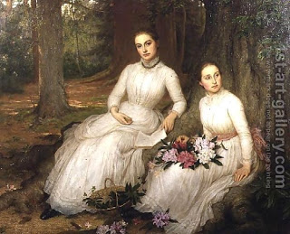

Sanhedrin 75 - Who is Burned
The following transgressions carry the penalty of burning. "Burning" does not mean that the convict is set on fire, but rather that molten lead is poured down his throat.
One who cohabits with a woman and her daughter, and the married daughter of a Kohen who commits adultery - however, the man who committed adultery with her is strangled, like all other adulterers. Similar to the category of a woman and her daughter, one is burned for cohabiting with his daughter, his daughter's daughter and his son's daughter, his wife's daughter, her daughter's daughter and her son's daughter; his mother-in-law, his mother-in-law's mother and his father-in-law's mother.
Art: Mrs. Louisa Starr Canziani - Kathleen and Mary Ann